Surface stress and the narrow-ring β-plane analogue in WC25 turbulence
Velocity notation: u′rms(t) = √⟨|𝐮′L(t)|²⟩ denotes the total rms velocity fluctuation, not one component; u′rms,0 is its initial value. The stress ratio is u*/u′rms,0. We reserve q for potential vorticity. Existing figure labels using q₀ or q′ denote these rms speeds and are being regenerated.
Results document for the two October 2026 campaigns that extend Wagner & Constantinou (2025, JFM 1020 A51, "WC25"). Campaign A asks whether a constant along-wave surface stress turns the depth-alternating jets of initially Lagrangian-shear-free wave-averaged turbulence into Langmuir rolls. Campaign B asks whether the two-dimensional (x–z) WC25 dynamics started from the Vallis & Maltrud (1993) spectral ring reproduce the β-plane dumbbell spectrum and zonal organisation of Vallis (2017, Figs 12.3–12.4). Both campaigns ran on DeltaAI GH200 GPUs with Oceananigans 0.107; every figure is Julia/CairoMakie output from the campaign analysis scripts. The two source reports are provided alongside this synthesis.
Summary
A counter-wave surface jet (−3.2e−3) and depth-alternating interior bands grow from an initially shear-free Lagrangian field; their share of the relative energy rises from 0.19 (t = 400) to 0.40 (t = 1000) while the wave-free control stays below 0.02. The generated mean flow is weak relative to the imposed Stokes drift, so U_E ≈ −uˢ remains a useful approximation; the Lagrangian mean does have jet shear.
In the cases run, rolls appeared when the instantaneous ratio u*/u′rms(t) reached ≈ 0.7–1 and only for La ≲ 0.3: u*/u′rms,0 = 0.01 stayed indistinguishable from zero stress to t = 1000, 0.03 transitioned at t ≈ 277, 0.1 at t ≈ 80, and 0.3–1 gave shear turbulence with roll anisotropy ≤ 1.2, the same as their wave-free controls. These are observations in this sampled setup (one seed at most ratios, two grids at three ratios), not necessary or sufficient conditions.
With shallow waves (β_eff = ½ exactly) the ring energy avoids the Rhines-estimate dumbbell and piles up near the k_z axis: anisotropy index 0 → 0.70, centroid 9 → 5.1 cycles, x-elongated vorticity bands, a measured inverse energy flux. The six-seed k₀ = 12, rb = 2 ensemble shows the VM93 Fig. 5 dumbbell shape cleanly; this is a source-matched qualitative comparison, not an exact reproduction.
The exact-zonal energy fraction falls from 0.16 (rb = 0.5) to about 0.04 (rb = 1) and 0.017 (rb = 2) at 100 T_e; ring width, a second grid (512²), seed and the WENO regime give the same picture. Deep waves confine β dynamics to the upper third and add a seed-sensitive x-mean jet.
12.94 billed GPU-hours in total (surface stress 10.83, Vallis-2D 2.11) against a 60 GPU-hour ceiling; this includes validation, retries and analysis.
Methods
Shared numerics
WC25 configuration: wave-averaged (Craik–Leibovich) Navier–Stokes for the Lagrangian-mean velocity uᴸ in a unit domain, periodic in x (and y in 3-D), impermeable free-slip top (z = 1) and bottom, WENO(order 9) implicit LES with no explicit closure, RK3, Float64, Oceananigans 0.107. Stokes drift from the printed WC25 equations: deep ∂z uˢ = ¼e^{8(z−1)} (uˢ(1) = 1/32), shallow/medium ∂z uˢ = z/2. uˢ is never added to the initial condition, so the primary initial Lagrangian mean is shear-free and the Eulerian mean starts at −uˢ. The repository driver's DeepStokesShear(2, 8) profile is not eq. (2.7) and was not used by either campaign. All JLD2 output uses stream IO (memory-mapped IO fails on Lustre), checkpoints are segmented and were verified to restart bitwise identically.
| A · Surface stress (3-D) | B · Vallis ring (2-D, x–z) | |
|---|---|---|
| Grid | 128³ (sweep), 256³ (three cases); unit cube | 256² (all), 512² (three cases); Flat y, v ≡ 0 |
| Initial condition | Seeded solenoidal random field, spectrum ∝ (k/k_e)⁴e^{−2(k/k_e)²}, k_e = 2π·10, rms u′rms,0 = 0.03, zero horizontal means; WC25's 1000 → 10 vorticity spin-up skipped by design | Streamfunction ring ψ = Σ 2Re[A e^{i2πmx}] sin(nπz), Gaussian E(K) ∝ e^{−(K−K₀)²/2σ²}, K₀ = 2π·9 (or 12), σ = one mode spacing (a chosen width: VM93's Z/E = 2K² is consistent with a narrow ring but does not fix σ uniquely), exactly solenoidal on the C-grid, k_x = 0 modes removed (they would carry 6% of the energy) |
| Control parameter | u*/u′rms,0 ∈ {0, 0.01, 0.03, 0.1, 0.3, 1}, τ = u*² as a flux condition on u at z = 1; La = √(u*/uˢ(1)) | rb = β/(u′rms,0K₀²) with β = ∂zz uˢ = ½ (shallow); rb = 1 ⇒ u′rms,0 = 1.56e−4, turnover T_e = 1/(u′rms,0K₀) = 113 = Rossby time K₀/β |
| Families | deep waves (primary), medium waves (∂z uˢ = z/2), wave-free controls from the same Lagrangian field | shallow (β-plane exact), deep (β(z) = 2e^{8(z−1)}, surface-intensified), wave-free, plus a doubly periodic pseudo-spectral β-plane reference |
| Durations | t = 400 all; 1000 for deep r ≤ 0.3, r = 1 and the r = 0 control | 200 T_e pilots; 100 T_e sensitivity; 60 T_e ensemble |
| Validation | divergence, momentum (1e−19), d⟨U⟩/dt = τ/H, wave-only quiescence, energy monotone, budget residual ≤ 0, restart | divergence 7e−18, Parseval-exact spectra, linear Rossby wave within 0.23% with −x phase, quiescence, Stokes work 6e−17, Δt convergence to 1e−4 for Δt ≤ 4, restart |
Physics of the 2-D analogue
With ω_y = ∂z u − ∂x w, the curl of the wave-averaged momentum equation gives D(ω_y − ∂z uˢ)/Dt = 0, so Dω_y/Dt = (∂zz uˢ) w: a β-plane with z ↔ y, w ↔ v, ζ = −ω_y and β_eff(z) = ∂zz uˢ. The Stokes momentum terms ∂z uˢ (w x̂ − u ẑ) are perpendicular to uᴸ and do no work on it; energy is conserved up to the implicit dissipation. For shallow waves β_eff = ½ is uniform and the wall problem is the odd-symmetric subspace of a doubly periodic 1 × 2 β-plane; for deep waves β_eff varies by 3000× over the depth and the case is not a homogeneous-β reproduction.
Case tables
A · Surface stress
| u*/u′rms,0 | u* | La | family | N | seeds | t_end | outcome |
|---|---|---|---|---|---|---|---|
| 0 | 0 | 0 (deep, medium); undefined (none) | deep · none · medium | 128³, 256³ (deep) | 1, 2 | 1000 | WC25 regime: counter-wave surface jet, alternating bands, K_jet/K_rel 0.19 → 0.40 |
| 0.01 | 3e−4 | 0.10 | deep | 128³ | 1 | 1000 | indistinguishable from zero stress (u*/u′rms ≤ 0.3) |
| 0.03 | 9e−4 | 0.17 | deep | 128³, 256³ | 1, 2 | 1000 | transition at t ≈ 277 (u*/u′rms = 0.74; 256³: 0.66–0.74), Langmuir state by t = 1000 |
| 0.1 | 3e−3 | 0.31 | deep · none · medium | 128³, 256³ (deep) | 1 | 400 (1000 deep) | rolls from t ≈ 80 (u*/u′rms = 1.0; 256³ onset t = 156, ratio 1.06) |
| 0.3 | 9e−3 | 0.54 | deep | 128³ | 1 | 1000 | shear-dominated, roll anisotropy ≤ 1.2 |
| 1 | 3e−2 | 0.98 | deep · none | 128³ | 1, 2 | 400; deep extension to t ≈ 1000 still finishing at report time | shear turbulence, same anisotropy as its control; surface velocity O(1), where the implicit dissipation is velocity-dependent |
B · Vallis-2D
| case set | parameters | N | seeds | T_e | outcome (exact-zonal K_jet/K · anisotropy at end) |
|---|---|---|---|---|---|
| pilots shallow / deep / none | k₀ = 9, σ = 1, rb = 1 | 256², 512² | 1 | 200 | 0.050 · 0.70 / 0.39 · 0.62 / 0.12 · 0.01 (512²: 0.050 · 0.715 / 0.384 / 0.133) |
| β-plane reference | doubly periodic, β = ½, same ring law and u′rms,0, ∇⁸ hyperviscosity | 256² | 1 | 200 | 0.060; same dumbbell as the wall case |
| rb bracket (shallow) | rb = 0.5, 2 | 256² | 1 | 100 | 0.159 · 0.44 and 0.017 · 0.70 (base at 100 T_e ≈ 0.04 · 0.62) |
| ring width (shallow) | σ = 0.5, 2 | 256² | 1 | 100 | 0.027 · 0.61 and 0.040 · 0.56 |
| k_x = 0 modes kept | +6% initial zonal energy | 256² | 1 | 100 | 0.097 · 0.70 |
| λ = 200 rescaling (shallow, none) | uˢ and u′rms,0 × 200, u′rms,0 = 0.031: identical physics, nonlinear WENO regime | 256² | 1 | 100 | 0.039 · 0.63 (K/K₀ 0.990) and 0.118 · 0.01 |
| second seed (shallow, none, deep) | k₀ = 9, rb = 1 | 256² | 2 | 100 | 0.043 · 0.64 / 0.113 · 0.01 / 0.074 · 0.45 |
| ensemble (VM93-inspired parameters) | k₀ = 12, σ = 1, rb = 2 | 256² | shallow 1–6, none 1–3, deep 1 | 60 | shallow 0.012 ± 0.003; none 0.06 ± 0.03 |
A · Surface stress on WC25 decaying turbulence
Deep-wave Stokes drift, stress applied along the waves at the surface, decaying turbulence from a shear-free Lagrangian field. Because the fluctuation velocity u′rms(t) decays while τ is fixed, u*/u′rms(t) increased in every stressed run over the durations sampled, and it is this instantaneous ratio rather than u*/u′rms,0 that organises the cases. Whether a weak stress eventually crosses the roll threshold is not established by these finite-time runs: the stress itself sustains fluctuations (the enstrophy plateaus), so u′rms need not decay indefinitely.
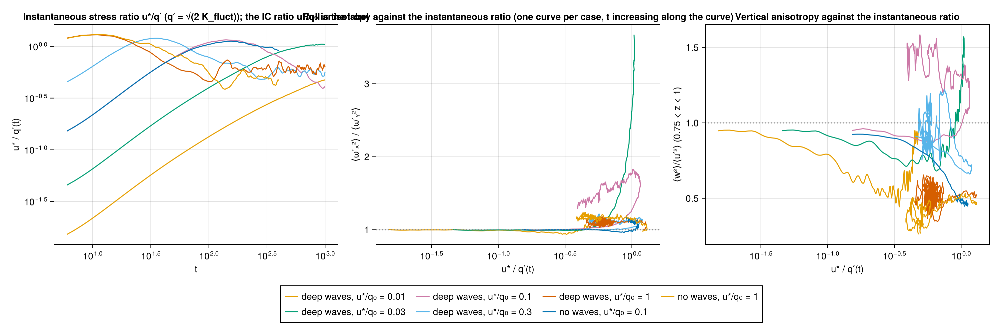
final_regime.png.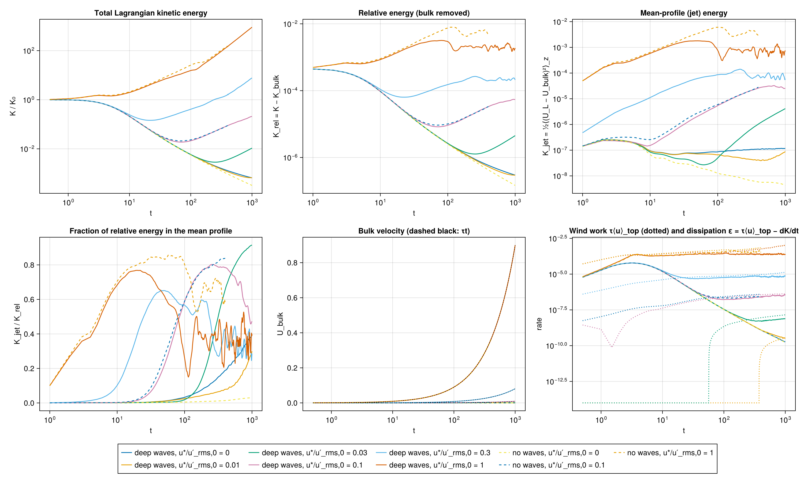
final_energy.png.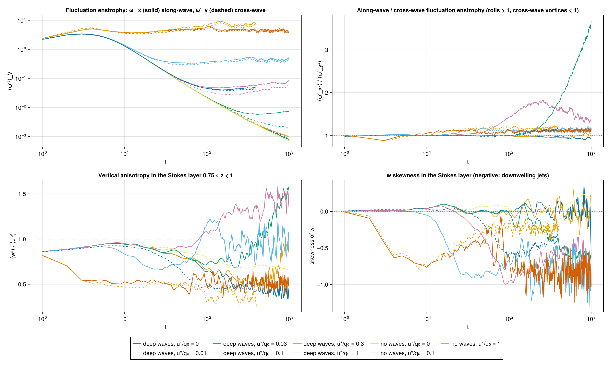
final_anisotropy.png.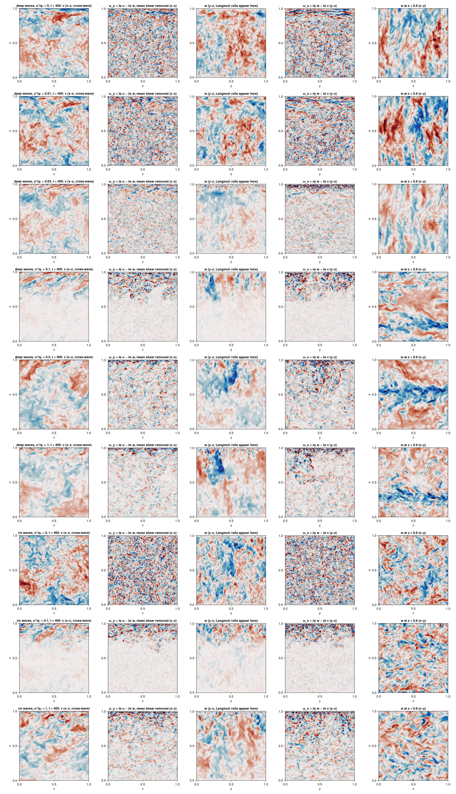
final_sections_t400.png.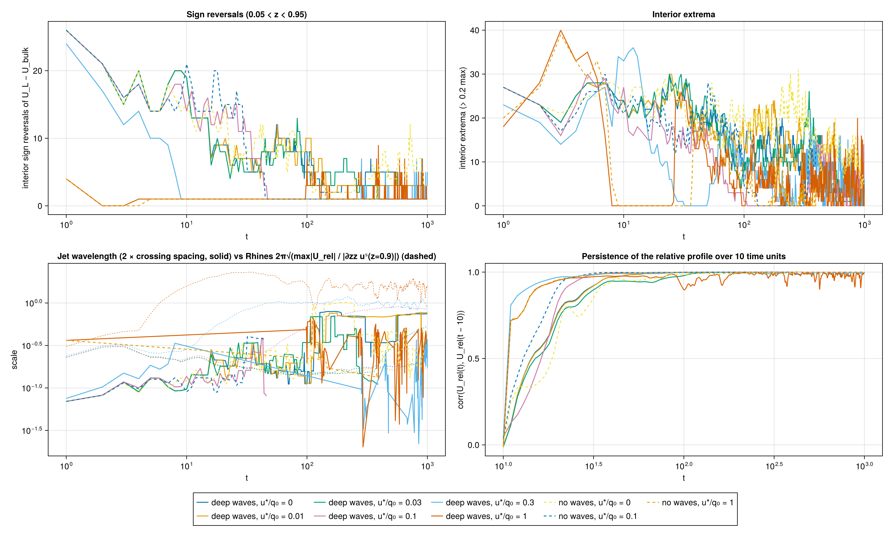
final_jets.png.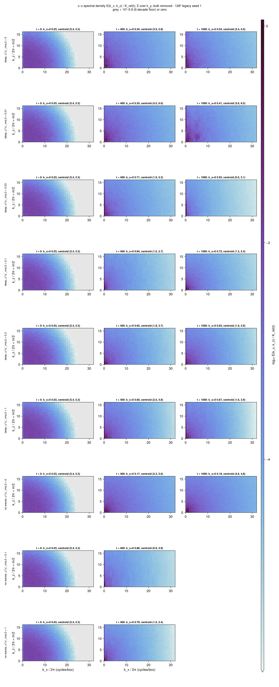
final_spectra.png used a DCT/DST scaling that summed to half the energy (fractions and centroids were unaffected). Figure final_xz_spectra_heatmap.png.B · Vallis narrow-ring decay in two-dimensional WC25 flow
One Lagrangian ring field (k₀ = 9 cycles/box, σ = one mode spacing, rb = 1, seed 1) evolved under shallow waves, deep waves and no waves; the ring parameters follow the Vallis demo code (its amplitude law 1/[K² + (K² − 3200)²] peaks at 9.0 cycles and, once its unnormalised FFT is undone, corresponds to rb ≈ 0.96) and VM93 (β = 400, E = 1, K = 12 give rb ≈ 1.96 under the assumed source normalization; their Z/E = 2K² is consistent with a narrow ring but does not determine its width, so σ = 1 mode is a chosen value tested against σ = 0.5 and 2). The comparison with the published figures is qualitative and source-matched, not an exact reproduction.
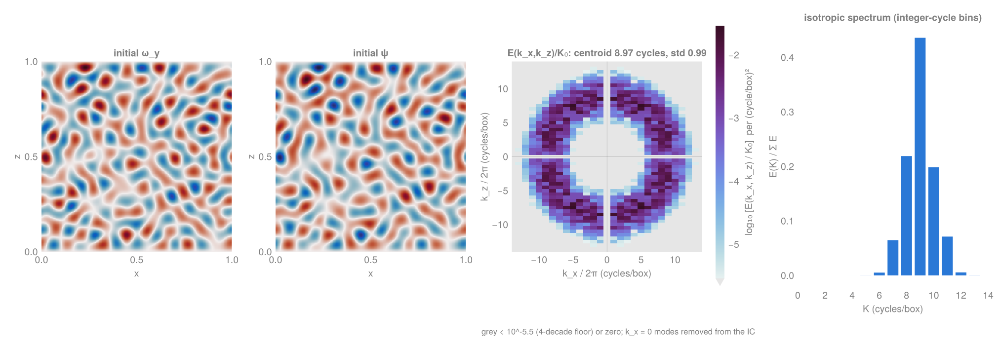
final_ic_heatmap.png. Heatmap: spectral density per (cycle/box)², normalized by the initial energy K₀, one cell per lattice mode (k_x/2π integer, k_z/2π = n/2 for the wall sine basis), log₁₀ colour on a perceptually uniform sequential map with limits shared across the panels and families being compared; cells more than four decades below the shared maximum, or exactly zero, are grey. No interpolation. The earlier filled-contour version is kept as final_ic.png.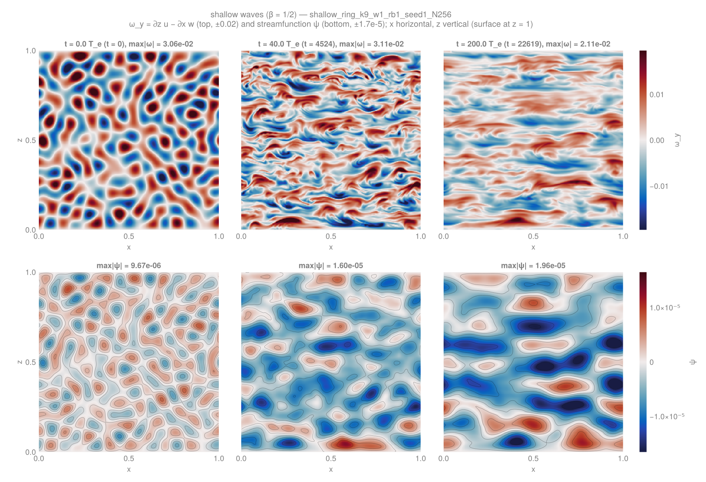
final_panels_shallow.png.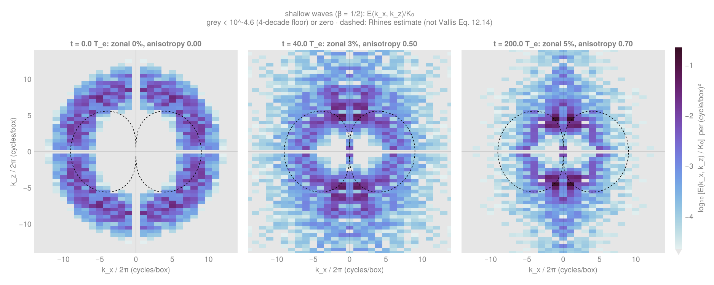
final_spectra_shallow_heatmap.png. Heatmap: spectral density per (cycle/box)², normalized by the initial energy K₀, one cell per lattice mode (k_x/2π integer, k_z/2π = n/2 for the wall sine basis), log₁₀ colour on a perceptually uniform sequential map with limits shared across the panels and families being compared; cells more than four decades below the shared maximum, or exactly zero, are grey. No interpolation. The earlier filled-contour version is kept as final_spectra_shallow.png.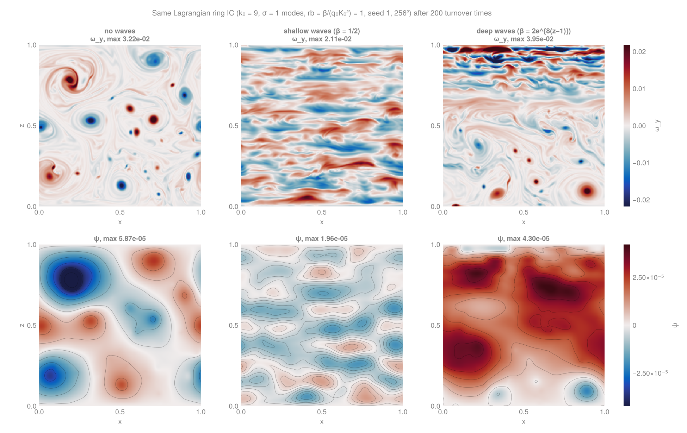
final_comparison_t200.png.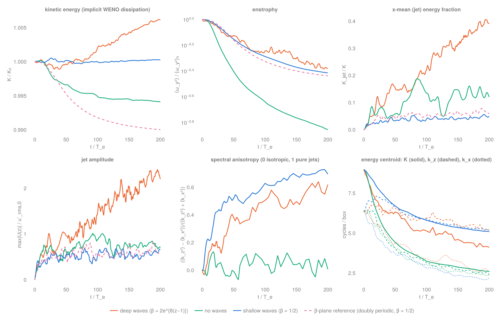
final_timeseries.png.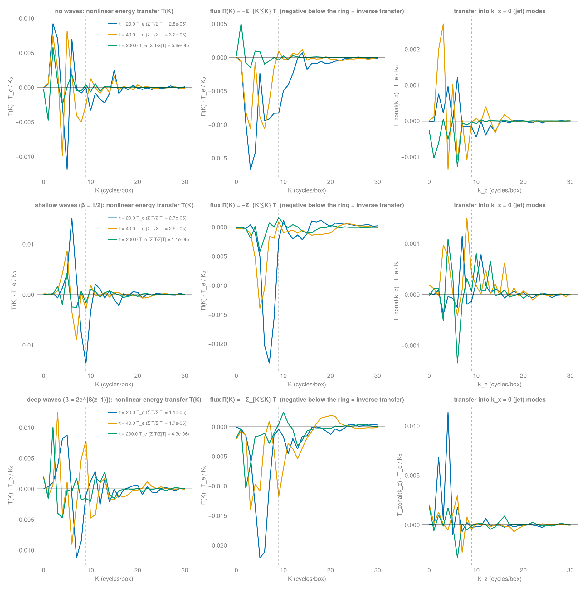
final_transfer.png.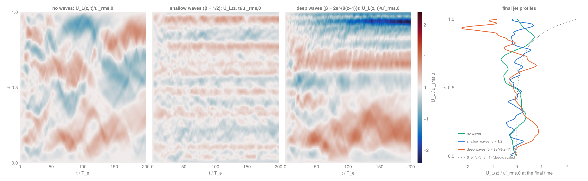
final_jets.png.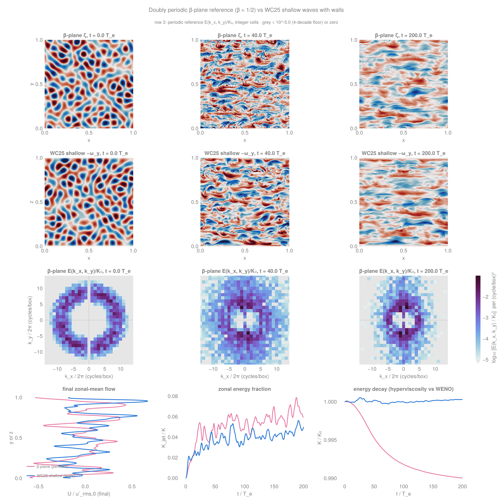
final_betaplane_heatmap.png. Heatmap: spectral density per (cycle/box)², normalized by the initial energy K₀, one cell per lattice mode. Lattices differ between the two geometries: the doubly periodic reference (unit box, Fourier in both directions) has integer spacing in both k_x/2π and k_y/2π, so its cells are 1 × 1 (cycle/box)²; the WC25 wall case uses a sine basis in z with k_z/2π = n/2, i.e. half-integer spacing and ½ (cycle/box)² cells, so its spectra (other figures) show twice as many rows in k_z, log₁₀ colour on a perceptually uniform sequential map with limits shared across the panels and families being compared; cells more than four decades below the shared maximum, or exactly zero, are grey. No interpolation. The earlier filled-contour version is kept as final_betaplane.png.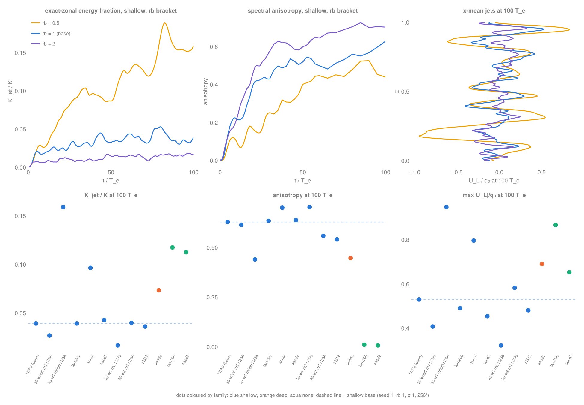
final_variants.png.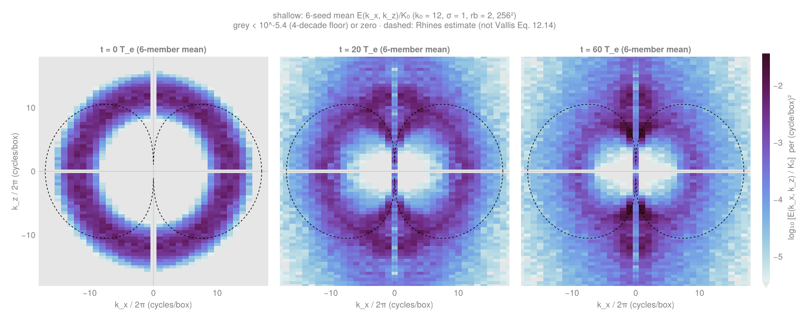
final_ensemble_spectra_shallow_heatmap.png. Heatmap: spectral density per (cycle/box)², normalized by the initial energy K₀, one cell per lattice mode (k_x/2π integer, k_z/2π = n/2 for the wall sine basis), log₁₀ colour on a perceptually uniform sequential map with limits shared across the panels and families being compared; cells more than four decades below the shared maximum, or exactly zero, are grey. No interpolation. The earlier filled-contour version is kept as final_ensemble_spectra_shallow.png.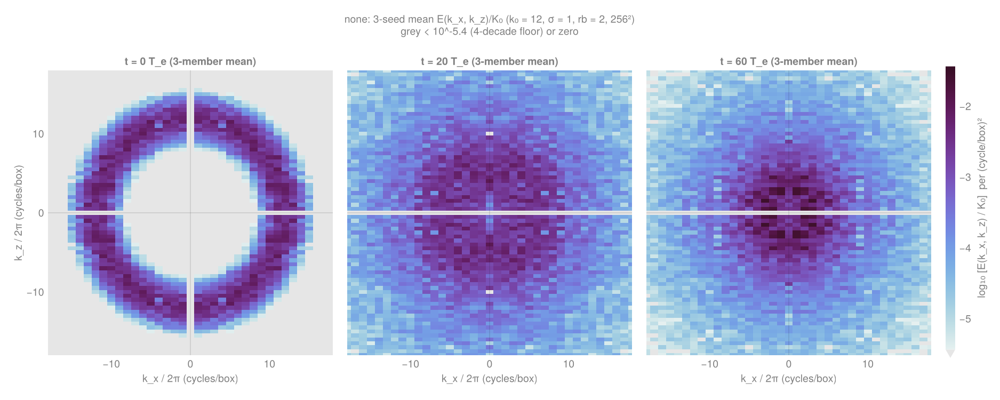
final_ensemble_spectra_none_heatmap.png. Heatmap: spectral density per (cycle/box)², normalized by the initial energy K₀, one cell per lattice mode (k_x/2π integer, k_z/2π = n/2 for the wall sine basis), log₁₀ colour on a perceptually uniform sequential map with limits shared across the panels and families being compared; cells more than four decades below the shared maximum, or exactly zero, are grey. No interpolation. The earlier filled-contour version is kept as final_ensemble_spectra_none.png.Controls, resolution and seed dependence
| check | A · Surface stress | B · Vallis-2D |
|---|---|---|
| Controls | Wave-free runs from the same Lagrangian field at r = 0, 0.1, 1: bands below the fluctuation rms at r = 0 (K_jet/K_rel ≤ 0.02); roll anisotropy 1.17–1.24 at r = 0.1, 1 — the same as the wave cases at La ≥ 0.5. Wave-only quiescent state exactly at rest. | Wave-free member from the identical field: Fig. 11.8 vortex decay, anisotropy ≈ 0, remaining enstrophy 14% versus 39–42% with waves (86% lost versus 58–61%; the remaining fractions differ by about threefold, not the losses). Doubly periodic β-plane reference matches the wall case. Quiescent wave-only state exactly at rest. |
| Resolution | 256³ at r = 0, 0.03, 0.1: surface jet −3.21e−3 vs −3.24e−3 and interior amplitude 8.4e−4 vs 7e−4 at r = 0 (K_jet/K_rel 30% lower); r = 0.1 matches 128³ within 10% in u′rms, u′, surface mean and K; onset time at r = 0.1 shifts 82 → 156 while the onset ratio stays 1.02–1.06. Two grids agree on the ratio; this is consistency between two resolutions, not demonstrated convergence. | 512² from the same coefficients: K_jet/K 0.050 vs 0.050 (shallow), 0.384 vs 0.400 (deep), anisotropy 0.715 vs 0.696, identical U_L(z) up to small-scale detail, 6% more enstrophy at 200 T_e; deep energy drift +0.6% → +0.1% over 200 T_e (decreases with resolution; not shown to vanish). Agreement between two grids; a third would be needed to claim convergence. |
| Seeds | Seed 2 at r = 0, 0.03, 1 and control 0: surface jet −3.5e−3 vs −3.2e−3, interior 8.8e−4 vs 7e−4 (10–20%); same transition behaviour at r = 0.03. One seed only at r = 0.01, 0.1, 0.3. | Shallow seed 2 matches seed 1 (0.043 vs ≈ 0.04); six-seed ensemble spread ±0.003 at k₀ = 12; deep x-mean jet is realisation-sensitive (0.074 vs ≈ 0.2 at 100 T_e). |
| Time stepping | CFL 0.5 wizard, max Δt 0.1; restart bitwise identical at fixed Δt. | Δt = 0.25…4 converge to < 1e−4 (end-time matched); production Δt = 1 (0.79 for deep, wave limit); restart bitwise identical. |
Resource use
| campaign | jobs | billed GPU-h | notes |
|---|---|---|---|
| A · surface stress | 31 | 10.83 | 128³ sweep + extensions to t = 1000 (≈ 7 GPU-h), three 256³ cases (1.5), seed 2 (1.0), medium family (0.4), validation (0.9), analysis and animations (0.4) |
| B · Vallis-2D | 12 | 2.11 | validation (0.10), pilots incl. the env-truncation rerun (1.13), 512² (0.19), β-plane (0.07), sensitivity (0.24), ensemble (0.23), figure passes (0.15); a 256² member costs 1–3 min once output I/O is sparse |
| total | 43 | 12.94 | ceiling 60 GPU-h (Vallis sub-budget 8); at most 4 concurrent single-GPU jobs; partition default memory. Job-level ledger: job_ledger.md. |
Caveats
- Not quantitative reproductions. A: u′rms,0 and k_e are pilot choices and WC25's spun-up IC was not reproduced. B: VM93's conventions are inferred (E = u′rms,0²/2, Z = ⟨ζ²⟩, 2π box) and Vallis' Fig. 11.8 IC is known only as "a few modes around wavenumber 9"; the comparison is the dumbbell shape and zonal elongation, not amplitudes.
- Finite time. B's shallow case at rb = 1 has not formed finite-amplitude exact-zonal jets by 200 T_e; the Rhines wavenumber coincides with the ring by construction. A's r = 1 to t ≈ 1000 and the 256³ cases stop at t = 400–1000.
- Numerics. WENO(9) Z-weights use ϵ = 1e−8; at u′rms,0 ~ 1e−4 (B) the scheme is effectively a linear 9th-order upwind scheme, tested by the λ = 200 member (same phenomenology, 1% more dissipation). The pseudo-spectral reference uses ∇⁸ hyperviscosity, so its dissipation differs by construction.
- Walls and symmetry (B). The sine basis makes the k_z lattice spacing π (mode counts not isotropic) and removes k_x = 0 modes; free-slip walls admit boundary-trapped x-mean flow (deep case, z ≈ 0.9).
- Sign convention. WC25 prints ∂z uˢ = ±z/2 in different places; both campaigns use +z/2, which fixes the Rossby phase direction (−x) and nothing else.
- Operational. A's first validation attempt and B's first two failed on test-side bugs (fixed, cost 0.8 GPU-h in total); B's first pilot lost its 512² members to whitespace truncation in the submission tool's environment passing (fixed on both sides); all rerun.
Editorial corrections to the source reports
Both campaign reports are bundled unedited (REPORT_surface_stress.md, REPORT_vallis2d.md) for traceability. Following an independent review of the surface-stress report, this synthesis departs from the source wording in the following places; these changes correct definitions and interpretation without changing simulation data.
- Langmuir number at zero stress. The source lists La = ∞ for u*/u′rms,0 = 0. With La = √(u*/uˢ(1)), zero stress with finite waves gives La = 0. For the wave-free controls we label La not applicable: the formula is singular for positive stress and indeterminate at zero stress. The case table above uses 0 and "undefined" accordingly.
- "Every finite stress eventually crosses the first threshold." Dropped. The finite-time runs show u*/u′rms(t) increasing in every stressed case, but the stress also sustains fluctuations (plateauing enstrophy), so an eventual crossing for weak stress is not established.
- "Regime rule". Rephrased as the pattern observed in this sampled sweep (one seed at most ratios, two grids at three ratios), not as necessary or sufficient conditions for rolls.
- "Resolution test of the rule" / "256³ confirms". Rephrased as agreement between two grids; convergence is not demonstrated by two resolutions.
- "Exceed CFL-safe velocities". The high-stress cases are integrated at CFL 0.5 by the adaptive step; the caveat is that O(1) mean advection makes the implicit WENO dissipation velocity-dependent (Galilean-invariance caveat for the LES), which is distinct from a CFL stability problem.
- "The Lagrangian mean stays nearly shear-free". Qualified: near-shear-free relative to the Stokes profile (U_E ≈ −uˢ persists), apart from the surface jet and interior bands that are the subject of the campaign.
- Final times and onset measures. The deep r = 1 extension was still finishing at t ≈ 1000 when the report was written (t = 400 is the completed common end time); at r = 0.03 the 256³ onset (t ≈ 270 by the classifier's layer-restricted measure) and the raw volume ratio (≈ 1.2 at t = 400) do not yet agree, so the 256³ transition timing is reported as uncertain.
The Vallis-2D report is by the same author as this synthesis; following a second independent review it is corrected here as follows:
- Deep energy drift. The source says the Stokes-term residual "vanishes with resolution"; the data show +0.6% (256²) and +0.1% (512²) over 200 T_e, i.e. a decrease between two grids, and this synthesis says so.
- Ring width. The source infers a "≈ 1-mode" VM93 ring from Z/E = 2K²; that ratio is consistent with a narrow ring but does not determine the width, so σ = 1 mode is described here as a chosen value with σ = 0.5 and 2 as sensitivity tests.
- Deep seed comparison. Compared at equal times: seed 2 gives K_jet/K = 0.074 at 100 T_e against ≈ 0.2 for seed 1 at 100 T_e (not against the 0.39 that seed 1 reaches at 200 T_e).
- Dumbbell overlay. The dashed curves are a velocity-based Rhines estimate K² = β|cos θ|/u′rms(t); they are not the ε-based wave–turbulence boundary of Vallis Eq. 12.14, whose contour has a different shape. Captions say "Rhines estimate".
- "Resolution-converged at 256²" is softened to agreement between 256² and 512²; "reproduced" means a source-matched qualitative comparison, not an exact reproduction.
Paths, commits and data
| A · Surface stress | B · Vallis-2D | |
|---|---|---|
| Code | /u/glwagner/nwt_wc25_surface_stress, branch glw/wc25-surface-stress (HEAD 8c5bc97): experiments/wc25_surface_stress, analysis/wc25_surface_stress, batch/wc25_*.batch | /u/glwagner/nwt_wc25_vallis2d, branch glw/wc25-vallis2d (HEAD f21278d + this document): experiments/wc25_vallis2d, analysis/wc25_vallis2d, batch/vallis_*.batch |
| Data | /work/hdd/bhcr/glwagner/wc25_surface_stress_2026-10-02/<waves>_r<ratio>_seed<s>_N<N>/ | /work/hdd/bhcr/glwagner/wc25_vallis2d_2026-10-02/<waves>_ring_k<k0>_w<σ>_rb<rb>_seed<s>_N<N>/, betaplane_*/, initial_conditions/ |
| Figures | figures/wc25_surface_stress/{pilot1,sweep1,sweep2,final,final256,final_medium,robust}_*.png, jets_vs_rolls_sections.mp4 | figures/wc25_vallis2d/{pilot,final}_*.png, final_metrics.txt |
| Reports | experiments/wc25_surface_stress/REPORT.md (bundled as REPORT_surface_stress.md) | figures/wc25_vallis2d/REPORT.md (bundled as REPORT_vallis2d.md) |
| Status / ledger | /u/glwagner/wc25_surface_stress_status.md, wc25_surface_stress_coordination/ledger/case_table.md | /u/glwagner/wc25_vallis2d_status.md, wc25_vallis2d_coordination/{submit_requests,submit_responses} |
PNG figures are ignored by the repository's .gitignore and live on disk only (the surface-stress campaign force-added its final set). This document references them by relative path from figures/wc25_results/; the review bundle preserves that layout. Source movies and the pre-existing packet-wake gallery content are served from the published glw/anti-stokes branch and are not duplicated in the bundle.
References
- Wagner & Constantinou (2025), Phenomenology of decaying turbulence beneath surface waves, JFM 1020, A51. doi:10.1017/jfm.2025.10649.
- Vallis & Maltrud (1993), Generation of Mean Flows and Jets on a Beta Plane and over Topography, JPO 23, 1346–1362. Author PDF.
- Vallis (2017), Atmospheric and Oceanic Fluid Dynamics, second edition, Cambridge University Press, Figs 11.8, 12.3 and 12.4. Related author teaching code.